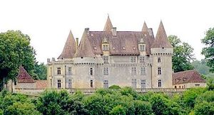
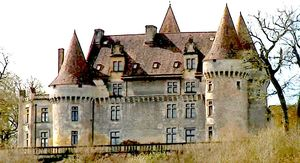
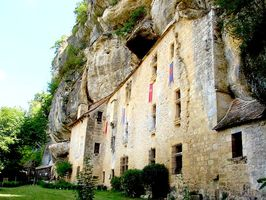
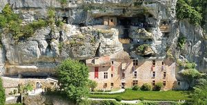
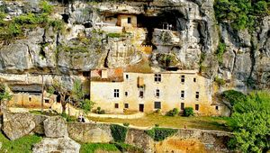

Recensement Jean-Claude Truffet
| Département | 24 — Dordogne |
| Canton | Saint-Cyprien |
| Commune | Tursac |
| Type d'édifice | Château |
| Période d'origine | XV-XVI-XVII |
| Coordonnées GPS | 44° 57' 46" Nord, 1° 02' 06" Est. Reignac grav 3 à 5 |





Château de Marzac du XVe, XVIe et XVIIe siècles, inscrit au titre des M.H.
Maison forte de Reignac.
MARZAC, était la propriété de la famille d' Hélie de Campniac est seigneur de Marzac et de l'Herm. Marzac passe ensuite à son fils Hébrard qui transmet l'héritage à son propre fils François, qui le perd au profit de la maison de Roffignac à la suite d'un décret. Christophe de Roffignac (mort en 1572) est seigneur de Couzages et de Marzac. Le château a appartenu à Marie-Madeleine Bart (1697-1781), petite-fille du célèbre corsaire Jean Bart, qui s'est mariée en 1732 avec Marc de la Barthe (1707-1787). En 1756, leur fille Marie de la Barthe de Thermes épouse François de Carbonnier (1727-1802), qui devient marquis de Marzac. En 1865, le domaine passe dans la famille de Fleurieu à la suite du mariage de Marie Marguerite Carbonnier de Marzac avec Henri de Fleurieu (1828-1897). En 1987, il est acheté par une famille danoise. Celle-ci est représentée par une société britannique qui pour améliorer le domaine a contracté une importante créance auprès d'une banque luxembourgeoise. Devant les impayés, la banque a fait mettre aux enchères le domaine en mars 2018. Personne ne s'étant porté acquéreur, cette banque est désormais propriétaire du domaine.
REIGNAC, château troglodytique, seul château-falaise intact de France, inscrite au titre des M.H.. Le gisement préhistorique, classé, a été occupé depuis le Paléolithique supérieur. Elle date du XVIe siècle. Au XVIIIe siècle, cette demeure dépendait de la seigneurie de Marzac. Conservée dans un état exceptionnel et entièrement meublée dépoque, est le seul monument de ce type « château falaise » totalement intact.
MARZAC, est bâti au XVe siècle et des constructions ont été ajoutées ultérieurement. Aux angles du logis rectangulaire s'élèvent quatre tours circulaires. La façade principale est orientée au nord-est, en direction du bourg de Tursac. Une tour d'escalier carrée a été ajoutée contre la façade sud-ouest, à égale distance des deux tours d'angle. La tour sud abrite une chapelle qui a été utilisée comme chapelle funéraire. La majeure partie de l'édifice est couronnée de mâchicoulis et de chemins de ronde. Les façades sont percées de fenêtres à meneaux. Initialement, le château était entouré de douves, qui ont été comblées. Donnant au nord-est sur le précipice qui dévale vers la Vézère, la cour en terrasse est en partie bordée au nord-ouest et au sud-ouest de communs.
REIGNAC, la maison est constituée d'une façade à quelques mètres en avant de la falaise. Sur la gauche se voit une avancée du bâtiment qui devait être un peu plus élevée à l'origine, et constituer une sorte de tour carrée. Sous les fenêtres se trouvent des meurtrières d'arme à feu, à trois redans. La porte était protégée par un mâchicoulis. Au rez-de-chaussée, la maison masque un abri sous roche. La toiture est en partie formée par l'avancée du rocher, et en partie couverte en tuiles plates. Au-dessus du bâtiment court une terrasse rocheuse qui fut aménagée au Moyen-Age. C'est le seul château-falaise intact de France. La maison forte de Reignac appartient à la commune de Tursac.
Famille de Campniac Famille de Fleurieu
"
A Tursac Marzac grav 1_2 GPS : 44° 57' 46" Nord, 1° 02' 06" Est. Reignac grav 3 à 5